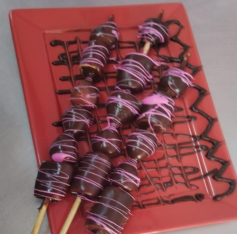

← Volver al módulo 3

Fondué de Frutas
Deliciosas frutas y malvaviscos bañados en chocolate semi amargo, decorados con chispas de colores.
Ingredientes
- 16 frutillas grandes
- 16 malvaviscos
- 1 paquete de palitos de brocheta
- 300 ml de chocolate semi amargo
- 300 ml de crema de leche
- Chispas de colores c/n
Preparación
Realizar el mise en place.
-
Picar el chocolate y llevar la crema de leche a hervor en una olla. Añadir el chocolate y mezclar hasta que espese.
-
En cada palito colocar 1 frutilla, 2 malvaviscos y un plátano.
-
Bañar los brochetas con el chocolate preparado y dejar enfriar.
-
Decorar con chispas de colores y emplatar.